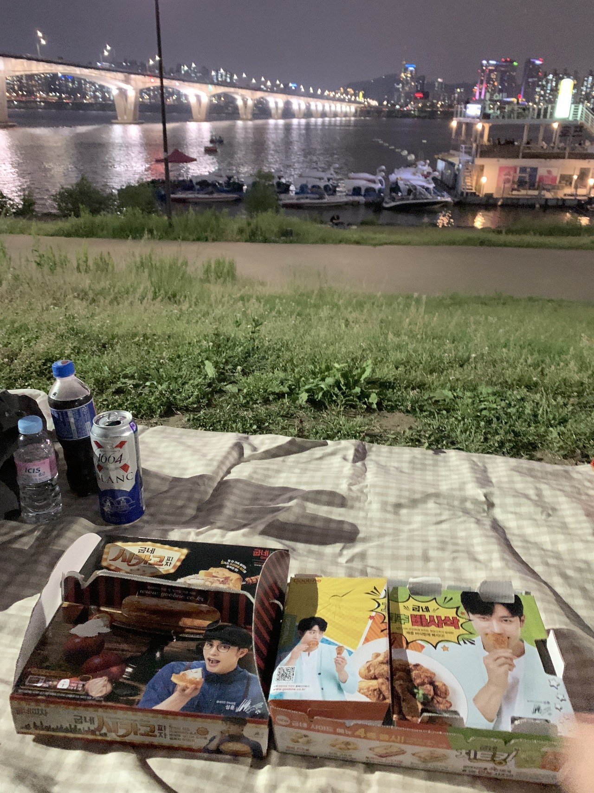
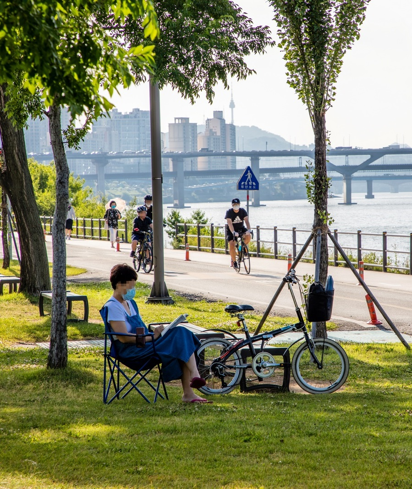

|  |  | |
| You can pay to rent a tent or mat, and eat delivered food. |
You can rent a bicycle and drive along the track or jog. |
There are facilities where you can enjoy sports such as soccer fields and basketball courts. |